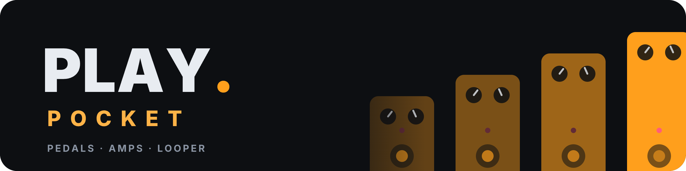
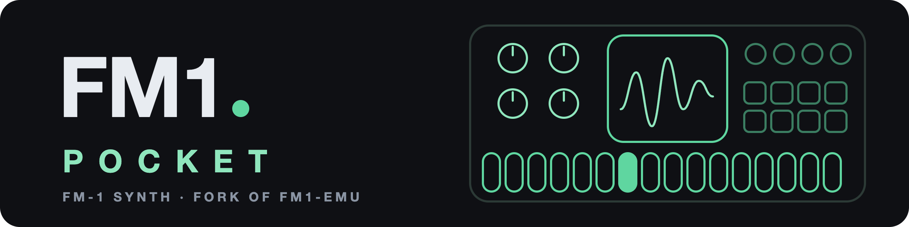
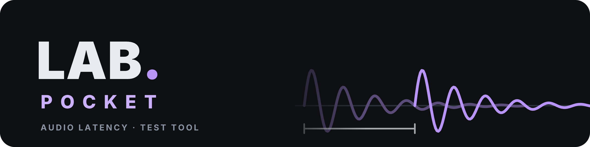

POCKET APPS
Four small, free music apps. They run in your browser, install on your phone or computer like an app, work offline, and keep everything on your device.

A pocket tracker: patterns, sampler, mixer, live effects and a song generator.

A tuner, note detector, scale finder, jam band, metronome and looper.

A vocal coach: warm-ups, song practice, a pitch test, takes, autotune and a singing game.

A pocket guitar rig: pedals, amps and cabs on a board, a looper and backing tracks. New, in beta.

An M-VAVE FM-1 synth for the phone, with the community's firmwares. A fork of fm1-emu by Joakim Eriksson, who made the emulator inside.

An audio latency lab: how much delay the browser adds between your microphone or USB interface and your headphones.
Print it
A QR code for each app, and one for this page. Point a phone camera at it and the app opens. Free to print on cards, flyers and stickers. The SVG stays sharp at any size, so use it for print. Keep a quiet white margin around it, and test the printed copy with a phone before you make many.